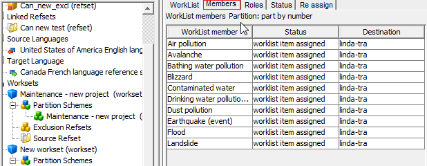
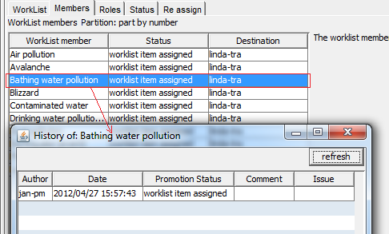
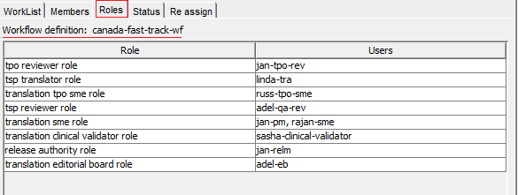
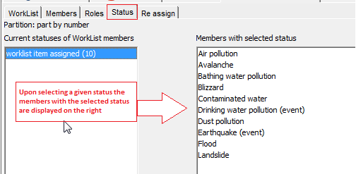
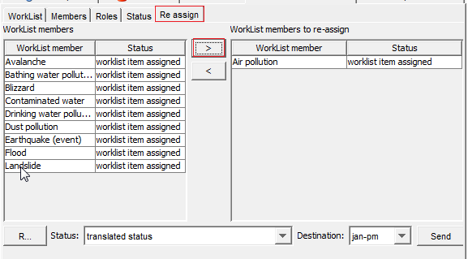
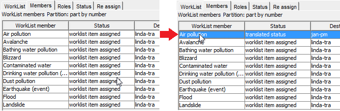
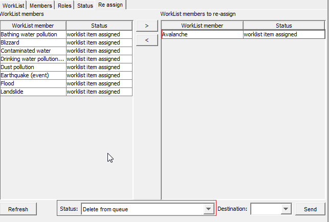

This 4-tabbed panel displays each worklist details, its members, its members statuses and a
reassignment functionality.
- The Members tab shows members is a list as well as the status of
each worklist member and its destination (the member of the translation team who has each
concept). in the example below, all the worklist members shown have status "assigned" and
were sent to Linda-tra translator:

- In this tab, a worklist member history may be seen by double-clicking on the selected
concept. Alternatively, a worklist member may be selected and then click on the “View
member history” button:

- A new window is displayed showing a table with the author of every change, the date and
time, the status of the concept at a given point, and any comments/issues related to this
concept.
- The Status tab on the right panel will show the number of worklist items with a given
status and the worklist members with the selected status.
The Roles tab lists roeles and users according to the specified workflow
definition:

The Status tab on the right panel will show the number of worklist items
with a given status and the worklist members with the selected status:
- The Status tab will show two windows: the one on the left will list the statuses of a
given worklist. By clicking on a status, the worklist members with the selected status
will be displayed on the right:

- Finally, the Reassign tab allows assigning concepts to another member of the translation
team:

- One or more concepts from a worklist may be selected and reassigned to another person by
clicking the “>” button, and then specifying the translation status and the new
destination. Then, click “Send” button to deliver the new assignment.
- The changed status may be seen in the Members tab:

- A refresh button has been added to update the concepts included in a worklist, which may
have been changed since worklist creation.
A worklist item may also be removed from a worklist by selecting 'Delete from queue option'.
In this case, no one in the translation team will receive the worklist member upon pressing
"Send" button because de the concept will be removed from the worklist

- The worklist member will be cleared from the Members list.